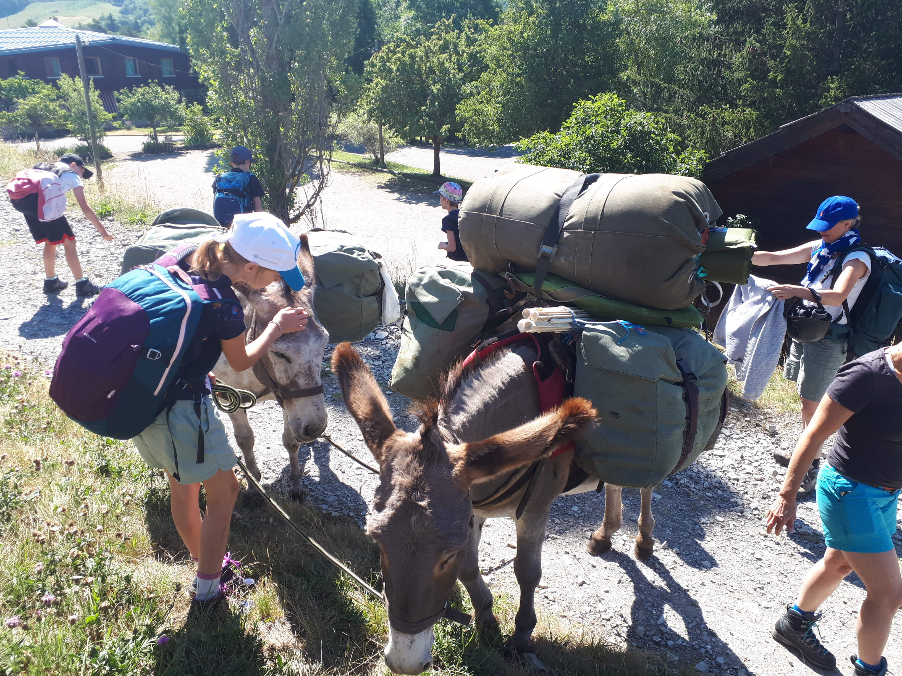

LA BELLE ÂNERIE
Découvrir la montagne autrement !
Découvrir la montagne autrement !


Il vous accompagne avec son calme et sa gaieté,
Porte votre matériel, repose les plus petits.
Vous amuse, vous motive à avancer encore un peu,
Il marche à vos côtés, ou peut-être est-ce vous, qui marchez à son côté.
Il connaît la montagne, il y a toujours travaillé.
Il vous regarde discrètement, et chipe un brin d’herbe en marchant.
Et s’il rechigne à passer… c’est qu’il a une meilleure idée!
On vous accueille, on vous donne toutes les explications nécessaires pour le soin, le guidage de l’âne et l’itinéraire choisi… On vous présente votre compagnon et vous faites connaissance avec lui en le brossant et l’équipant de son matériel de portage…. Et puis vous partez avec lui ! Quelques heures ou quelques jours… c’est selon! Vos affaires sur son dos, l’esprit et le corps léger, vous partez à l’aventure sur nos chemins de montagne, en joyeuse compagnie.
Notre seule limite: les ânes ne marchent pas dans la neige! Nous pouvons vous proposer de partir en randonnée dès lors que les sentiers sont dégagés. Généralement d’Avril à fin Octobre.
Nous vous proposerons un parcours sur sentiers balisés, adapté à votre demande et votre groupe. Familles en vadrouille ou randonneurs de compet’, tout le monde y trouvera son compte! Les montagnes du Champsaur ont des profils et paysages variés, du tout plat au très pentu. De plus, les ânes savent adapter leur allure!
Vous avez envie de découvrir la Montagne avec des yeux d’expert? Vous avez une envie particulière, de voir des vautours, de découvrir la flore ou les repères de chamois? Vous vous sentiriez plus à l’aise de partir avec un connaisseur du terrain? Vous pouvez partir en compagnie d’un Accompagnateur Moyenne Montagne, guide et fin connaisseur de l’environnement. Et des ânes, avec qui ils marchent depuis de nombreuses années.
| DURÉE | 1 ÂNE | 2 ÂNES | |||
|---|---|---|---|---|---|
| 1/2 journée 3 heures |
38 € | 73 € | |||
| 1 journée 9h-18h |
56 € | 106 € | |||
| 2 jours | 110 € | 210 € | |||
| 3 jours | 162 € | 300 € | |||
| 5 jours | 265 € | 477 € | |||
| 7 jours | 360 € | 630 € | |||
| Nous contacter pour réserver | |||||